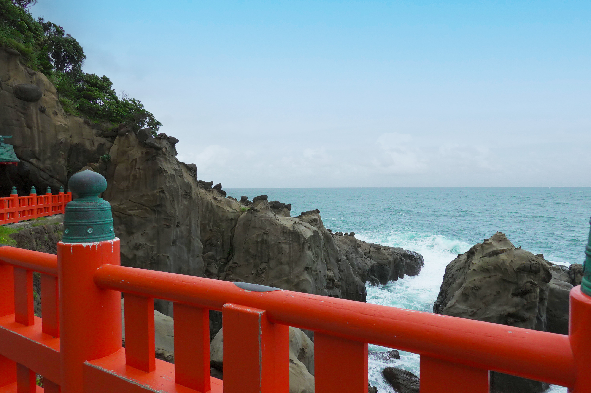
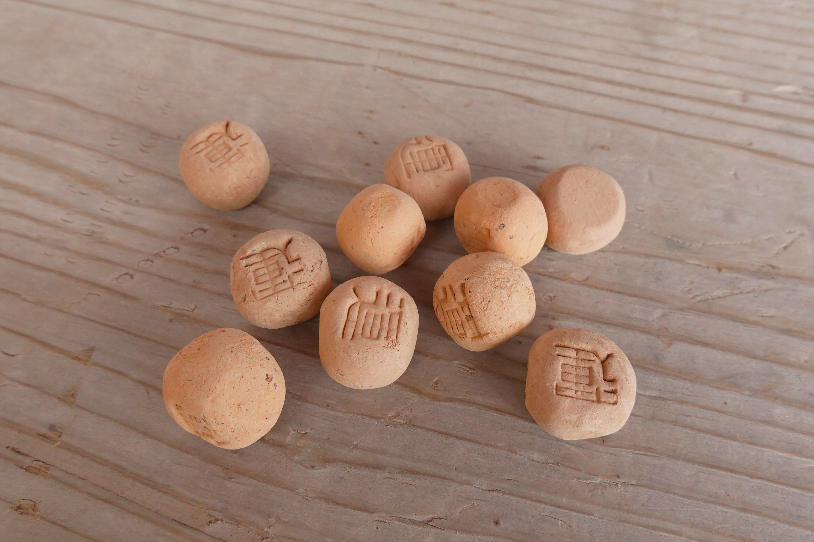

鵜戸神宮
鵜戸神宮は、海辺の崖にある洞窟の中に本殿が建てられているめずらしい神社です。トヨタマヒメが出産の際に、産屋が建てられた地としてと伝えられています。


鵜戸神宮は安産や子育てにご利益があるとされています。朱色の参道と青い海のコントラストが鮮やかで、本殿までの道のりは絶景です。

粘土を丸くこね「運」の文字を押して軽く焼いた「運玉」を本殿前の亀石に投げこみ、枡形のくぼみに入れば願いが叶うとされています。
基本情報
| 住所 | 〒887-0101 宮崎県日南市宮浦3232 |
|---|---|
| 電話番号 | 0987-29-1001 |
| 営業時間 | 6:00～19:00（10月から3月は7:00～18:00） |
| 休業日 | なし |
| 料金 | なし |
| アクセス | 宮崎インターから車で約50分。 宮交シティからバスで約70分。鵜戸神宮下車。徒歩約10分 |
| 駐車場 | 400台 |
| Webサイト | 鵜戸神宮 |